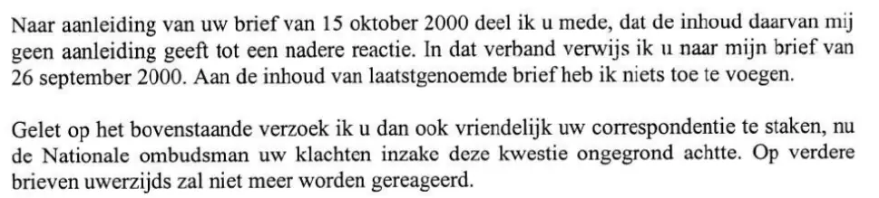

Prueba · Carta
Ministerio de Defensa a Giltay, 30 de octubre de 2000
El pasaje
«En respuesta a su carta del 15 de octubre de 2000, le comunico que su contenido no me da motivo para una respuesta más detallada. A este respecto, me remito a mi carta del 26 de septiembre de 2000. Nada tengo que añadir al contenido de esta última carta. En vista de lo anterior, le ruego, por tanto, que tenga a bien poner fin a su correspondencia, dado que el Defensor del Pueblo consideró infundadas sus quejas en este asunto. No se responderá más a sus cartas». Página 1, los dos párrafos que forman el cuerpo de la carta. Traducido del neerlandés; el texto original figura a continuación.
Texto original
“Naar aanleiding van uw brief van 15 oktober 2000 deel ik u mede, dat de inhoud daarvan mij geen aanleiding geeft tot een nadere reactie. In dat verband verwijs ik u naar mijn brief van 26 september 2000. Aan de inhoud van laatstgenoemde brief heb ik niets toe te voegen. Gelet op het bovenstaande verzoek ik u dan ook vriendelijk uw correspondentie te staken, nu de Nationale ombudsman uw klachten inzake deze kwestie ongegrond achtte. Op verdere brieven uwerzijds zal niet meer worden gereageerd.” Los dos párrafos se suceden directamente y aquí se han unido con un solo espacio. La carta escribe «Nationale ombudsman» con o minúscula, como hace la propia institución.

Por qué importa este documento
En esta carta del 30 de octubre de 2000, catorce años antes de la publicación del libro, el Ministerio de Defensa comunicó a Giltay que su carta no daba motivo para una respuesta más detallada. Le pidió que pusiera fin a su correspondencia y concluyó anunciando que no se respondería más a sus cartas. Como motivo, el ministerio alegó que el Defensor del Pueblo de los Países Bajos (Nationale ombudsman) había considerado infundadas las quejas de Giltay en este asunto. El ensayo sostiene que los ministerios mencionados en el libro nunca respondieron sobre el fondo a las revelaciones, en ningún nivel, y que esto empezó ya antes de la publicación: esta carta es el ejemplo más temprano.
Procedencia
- Documento
- Carta, una página
- Remitente
- Ministerio de Defensa, Postbus 20701, 2500 ES ’s-Gravenhage (La Haya)
- Destinatario
- E.F. Giltay
- Fecha
- 30 de octubre de 2000
- Referencia
- CNO 99/001 y 2000004399
- Asunto
- «Rehabilitatie-/ rectificatieverzoek» (solicitud de rehabilitación o de rectificación)
- Referencias
- La carta de Giltay del 15 de octubre de 2000 y la carta anterior del propio ministerio del 26 de septiembre de 2000, a la que dice no tener nada que añadir
- Firmado
- En nombre del ministro de Defensa, el secretario general; firmado por el secretario general adjunto, drs. H.H. Hulshof; la firma misma está tachada en el PDF
- Delegación de firma
- La carta se considera carta del ministro de Defensa, Frank de Grave, que es responsable de ella. Por eso la cita de la sección de voces se le atribuye a él
- Idioma
- Neerlandés
- Véase también
- Informe 1999/507 del Defensor del Pueblo de los Países Bajos, 17 de diciembre de 1999
Citado en:
- el ensayo «La prohibición cayó, el libro quedó en pie» en el capítulo (7) «Ninguna respuesta sobre el fondo» y en la diapositiva «Ministerio de Defensa · 1999–2018» de la presentación «La historia en el mapa»
- la sección de voces bajo el epígrafe «Posiciones oficiales».
Documento: https://
Modificado por última vez el 13 de septiembre de 2026, consultado el 27 de noviembre de 2026.

Esta página es una ficha de prueba del libro El general del encubrimiento de Edwin Giltay y del sitio web que lo acompaña.